| Home · All Classes · Grouped Classes · Annotated · Functions | |
The following table lists the stages of the Greenphone boot process. It contains a description of the actions performed during each stage of the boot process and an image of what the user should see on the LCD screen during each stage.
| Boot Stage | Description | |
|---|---|---|
| Power on | ||
| Hardware reset condition. | ||
| Initial Program Loader (IPL) | ||
| Immediately after system reset the System CPU executes code from the IPL area of the Disc-on-Chip device. The IPL partially initializes the Disc-on-Chip device and loads the Secondary Program Loader (SPL) into RAM and executes it. | ||
| Secondary Program Loader (SPL) | ||
The SPL provides two facilities:
After control is passed from the IPL to the SPL, the SPL initializes the hardware necessary to perform its functions including the:
The bootloader splash screen is displayed and the SPL loads and executes either the flash application or the Linux kernel. While the SPL is running the LCD contains the image to the right which is the first image displayed on the Greenphone LCD screen. | ||
| Linux Kernel | ||
| The kernel initializes all hardware with built-in drivers and displays the kernel splash screen on the LCD screen. The internal initial RAM disc is mounted and the Disc-on-Chip driver module is loaded. The initial RAM disc is unmounted. The kernel startup sequence continues until /sbin/init is executed in User Space and control of the boot sequence is passed over to it. | 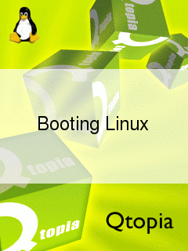 | |
| Init | ||
| The /sbin/init process controls the User Space startup sequence which is defined in the /etc/inittab file as follows: | ||
| /etc/rc.d/rc.modules boot Loads all modules required early in the boot process. This currently includes the following
| 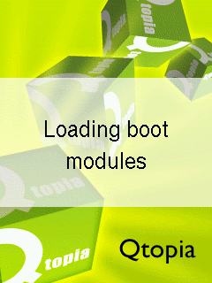 | |
| /etc/rc.d/rc.filesystems Linux provides an interface into the kernel via the proc virtual filesystem. This proc virtual filesystem is mounted on /proc. The Greenphone uses temporary filesystems for storing data that does not need to be retained over reboots. Temporary filesystems are mounted and populated at this stage. The temporary filesystems used by the Greenphone include:
| 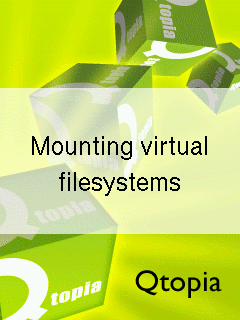 | |
| /etc/rc.d/rc.filesystems The Greenphone contains writable file systems, which can get corrupted if the device is not shutdown correctly. All writable filesystems on the device are checked for errors and automatically repaired, if possible. |  | |
| /etc/rc.d/rc.filesystems The internal storage of the Greenphone is divided into four block devices. The first block device /dev/tffsa is partitioned in two and contains the read-only root filesystem and Qtopia image. The third block device, /dev/tffsc, is used to store system configuration data. The remaining two block devices, /dev/tffsb and /dev/tffsd are used for storing user documents, user settings and installed 3rd party software. These block devices are mounted at the following paths:
| 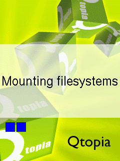 | |
| /etc/rc.d/rc.gadget boot The USB client interface on the Greenphone can be configured as either a network interface or a serial device. The USB client interface is configured as the device specified in /etc/gadget. | ||
| /etc/rc.d/rc.modules The remaining kernel modules are loaded at this stage. This includes drivers for:
| 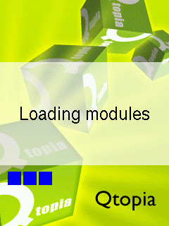 | |
| /etc/rc.d/rc.updateqtopia The Greenphone supports updating the Qtopia via an image on a miniSD card. If a miniSD card is present it is mounted and checked for a valid image. | 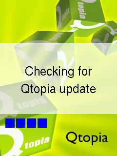 | |
| /etc/rc.d/rc.usbnet If the USB client interface is configured as a network interface the interface is started. The Greenphone uses inetd to start networking servers on demand. The following services are available on the Greenphone:
| ||
| /etc/rc.d/rc.sysinit Miscellaneous initialization including:
| 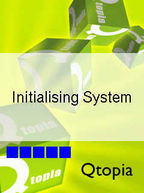 | |
| /etc/rc.d/rc.lids first_boot Qtopia builds with SXE enabled benefit from kernel level Mandatory Access Controls (MACs). The Greenphone uses the LIDS security framework to implement MACs. If the kernel has LIDS support and an SXE enabled Qtopia is detected, once only initialization is performed. | ||
| /etc/rc.d/rc.bootcharger An animated battery charging screen is displayed if it is detected that the user plugged in the wall charger or USB cable to initiate the boot sequence. The battery charging screen is displayed until the user presses and holds the Hangup key for one to continue loading Qtopia or unplugs the cable to power off the Greenphone. | 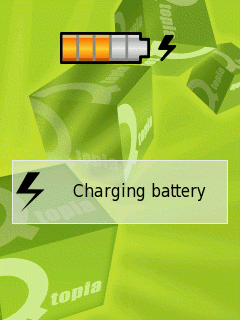 | |
| /etc/rc.d/rc.lids start Qtopia builds with SXE enabled benefit from kernel level Mandatory Access Controls (MACs). The Greenphone uses the LIDS security framework to implement MACs. If the kernel has LIDS support and an SXE enabled Qtopia is detected, LIDS is initialized and enabled. | 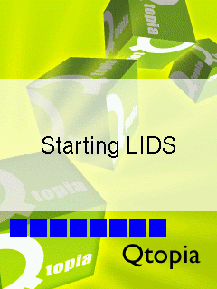 | |
| /etc/rc.d/rc.services start Qtopia depends on some underlying services for certain functionality. These services include:
| 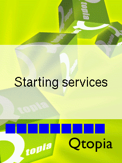 | |
| /etc/rc.d/rc.modules debug Additional kernel modules that are useful for debugging are loaded at this stage. This includes drivers for:
|  | |
| /etc/inittab The following services are started directly from the /sbin/init process and are automatically respawned if they terminate:
| ||
| /etc/rc.d/rc.qtopia respawn The final stage of the startup process is to start Qtopia. | 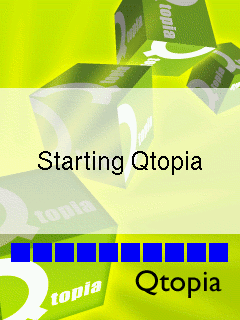 | |
| Qtopia | ||
| Qtopia displays the HomeScreen once it has finished loading. | 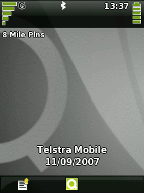 | |
The following table lists the stages of the Greenphone shutdown process. The table contains a description of what actions are performed during each stage of the shutdown process and an image of what the user should see on the LCD screen during each stage.
| Shutdown Stage | Description | |
|---|---|---|
| Qtopia | ||
| User initiated shutdown: The user selects 'Shutdown' or 'Reboot' from the shutdown dialog. Qtopia executes the shutdown program with the appropriate arguments. System initiated shutdown: Qtopia will automatically shutdown if it detects a critical power condition. | 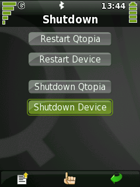 | |
| Init | ||
The /sbin/init process controls the User Space shutdown sequence which is defined in the /etc/inittab file as follows:
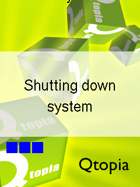 During system-initiated shutdown a banner is displayed at the top of the screen indicating the cause of the shutdown. For example the following images are displayed during system shutdown caused by a low battery. 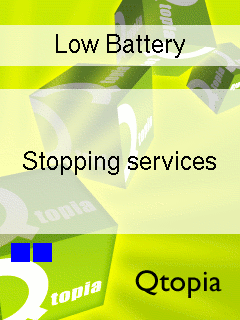 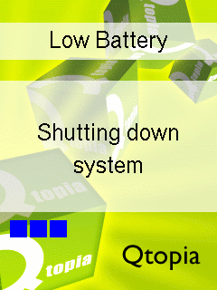 | ||
| Power off/Reboot | ||
| The system is powered-off or reset. | ||
| Copyright © 2008 Trolltech | Trademarks | Qtopia 4.3.4 |